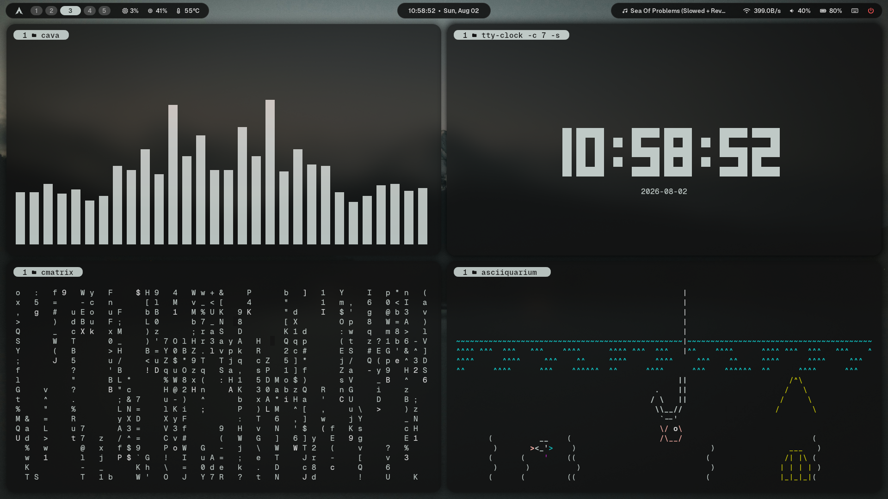
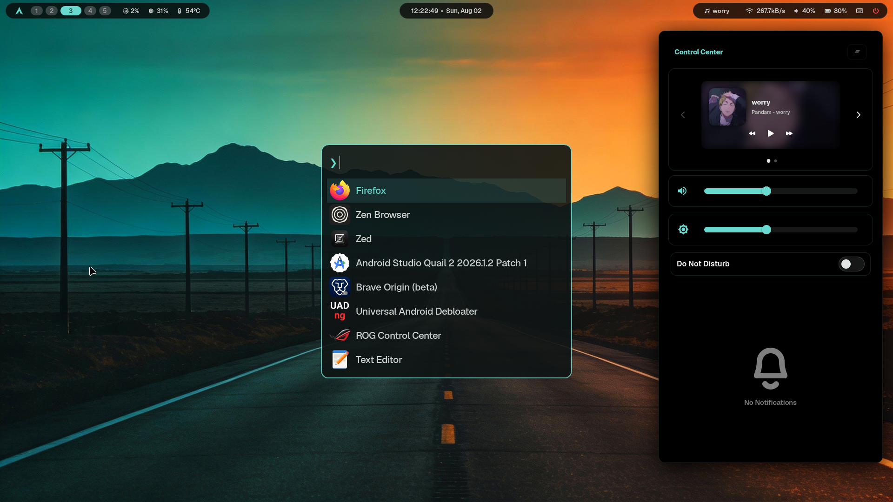

A finely tuned Arch Linux desktop environment. Dynamic theming, GPU-accelerated terminals, and zero bloat.

Colors are automatically generated from your active wallpaper using Matugen. The entire system adapts instantly.
Fully synchronized Zsh configuration with fzf integrations, fast syntax highlighting, and zoxide smart jumping.
Navigate your entire system without touching the mouse. Intuitive bindings for window management and utilities.
A unified Wayland suite featuring Waybar, SwayNC, and Fuzzel. Everything strictly follows the system color scheme.

Run the automated setup script on a fresh Arch Linux installation.
git clone https://github.com/insaneodyssey26/hyprland.git ~/hyprland
cd ~/hyprland
./setup.sh